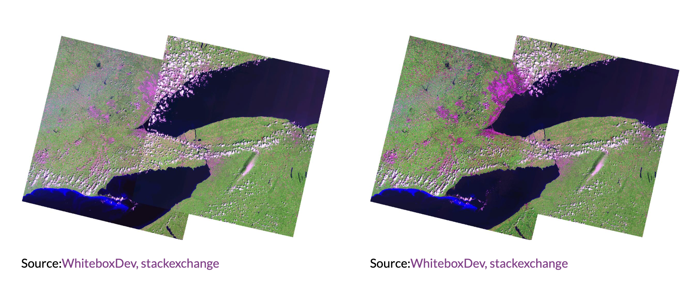

Corrections
Cape Town
Cape Town is one of the biggest cities in Africa (14th largest by population), and most people from around the world will immediately associate it with it’s main feature: table mountain. The city is located within the bounds of the ocean, and is surrounded around a 57km^2 mountain, which is globally recognized as a biodiversity hotspot characterized by the unique Fynbos biome.
The city is also characterised by stark socio-economic disparities that can be seen at small spatial scales, largely as a result of its Apartheid history.

Corrections
Corrections are critical steps in remote sensing pre-processing. Although most of the remotely sensed imagery that we would download has already ‘corrected’, it is important to understand what processes have been taken place to achieve this Analysis Ready Data (ARD).
Geometric corrections align images with ground coordinates using Ground Control Points to ensure spatial accuracy.
Atmospheric corrections address environmental factors like scattering and absorption, allowing for consistent comparison of imagery across different times and locations.
Joining Data Sets
Satellite images are limited by the satellite’s specific paths and rows (i.e., its route as it moves through space). When we download imagery from sites like Earth Explorer, scene (a unique combination of path and row) images are separate from one another, and require merging or mosaicking to join them to create a continous image.

Merging is the basic joining of adjacent datasets, and can lead to a final image with sharp edges between the different scenes (especially if the scenes were collected on different days).
Mosaicking is a more complex process that deals with overlapping areas a bit better by blending the overlapping areas together to create a seamless image.

It is important to consider temporal mismatches between the chosen scenes, as different atmospheric conditions might be present.
Enhancements
We can use a technique called enhancements to, well, enhance properties (like colour or brightness) of an image making certain features more easy to see (like buildings, moisture or vegetation). For ratio enhancements, the ratio largely depends on the spectral signature of the object or feature that you want to detect.
NDVI
The Normalised Difference Vegetation Index is a enhancement ratio which utilizes the fact that healthy plants reflect lots of infrared wavelengths and absorb red wavelengths to highlight areas which have healthy vegetation.
\[ NDVI = \frac{NIR - Red}{NIR + Red} \]
| Value Range | Surface / Land Cover Description |
|---|---|
| -1 to 0 | Water bodies, snow, clouds, non-vegetated surfaces (e.g., buildings) |
| 0 to 0.1 | Barren areas, rocks, sand, or snow |
| 0.2 to 0.5 | Sparse vegetation, shrubs, grasslands |
| 0.6 to 1.0 | Dense, healthy vegetation |
Surprisingly,
Texture
Texture is an enhancement which measures the spatial variation of grey values between each pixel and the pixels that surround it.
Principle Component Analysis
PCA is a statistical method which reduces the huge amounts of imagery data (which is typical for multi-band satellite imagery with lots of spectral bands) into an uncorrelated, smaller dataset. The resulting first component (PC1) will capture most of the variance within the dataset, while retaining majority of the original information.
. Leaf-Level vs. Canopy-Level Reflectance
The study emphasizes that different species have unique “spectral signatures” based on their leaf structure.
- The “Fynbos” Connection: Just as the Amazonian species in the paper show varying reflectance based on leaf thickness and water content, Table Mountain’s Fynbos has small, leathery (sclerophyllous) leaves. These do not reflect Near-Infrared (NIR) light as strongly as the broad, lush leaves of the tropical species studied in the paper, naturally leading to a lower NDVI calculation.
2. Spectral Overlap and “Confusion”
The paper discusses how similar spectral signatures between different plants (or plants and their backgrounds) can make it hard to distinguish them.
- The Table Mountain Issue: On Table Mountain, the “signal” from the sparse Fynbos often mixes with the “signal” from the dark grey sandstone and shadows of the cliffs. The paper explores how dimensionality reduction (simplifying complex data) is needed to find the true signal. Without this, your NDVI is likely “diluted” by the rocky background.
Fire History: Fire is a major factor in the fynbos. The paper specifically shows a “sudden drop of NDVI followed by a gradual vegetation recovery” in areas where fires occurred. If your satellite scene was taken shortly after a fire, the NDVI would be significantly lower than the mountain’s “known” status as a biodiversity hotspot.
Vegetation Age: The paper uses vegetation age (calculated from fire scars) as a key environmental variable. Younger vegetation that is still recovering from a burn will have a much lower NDVI than mature fynbos.